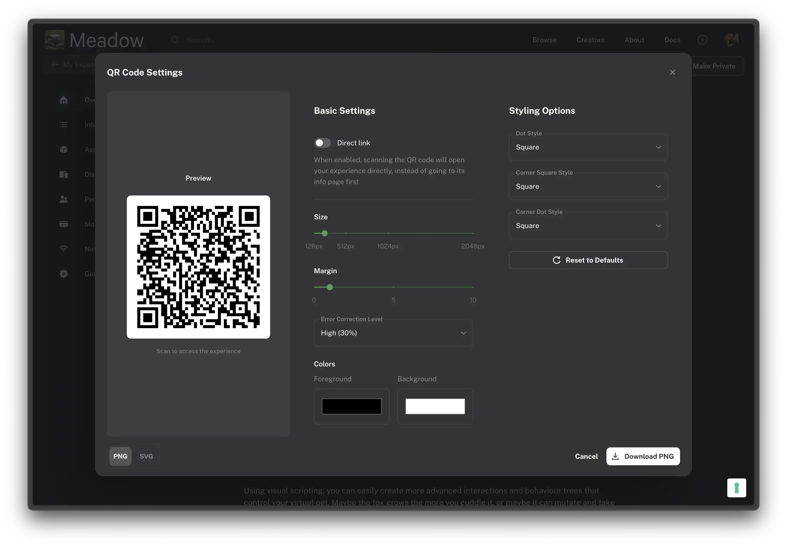

QR Codes
You can create QR codes for your Meadow experiences to make them easily accessible to your audience. When scanned, these QR codes will direct users to your experience either in the Meadow app or guide them to download it if they haven’t already installed it.
Getting Your QR Code
Every experience in Meadow comes with a QR code. To find it:
- Go to your experience in the Meadow dashboard
- The QR code is displayed on the experience page
- Click the QR code to open the QR Code Settings editor, where you can customise and download it
QR Code Settings
Clicking the QR code opens a full editor with a live preview. You can customise the appearance and behaviour of your QR code before downloading it.

Basic Settings
- Direct link — Toggle this on to make the QR code open your experience directly, instead of going to its info page first.
- Size — Set the resolution of the exported image, from 128px to 2048px.
- Margin — Adjust the quiet zone (white space) around the QR code, from 0 to 10. A margin of at least 1 is recommended for reliable scanning.
- Error Correction Level — Controls how much of the QR code can be damaged or obscured and still scan correctly. Options range from Low (7%) to High (30%). Higher levels make the code more resilient but also denser.
- Colors — Set custom Foreground and Background colours. Make sure there is enough contrast between the two for the code to remain scannable.
Styling Options
- Dot Style — Change the shape of the individual data dots (e.g. Square, Rounded, Dots).
- Corner Square Style — Change the shape of the three large corner squares.
- Corner Dot Style — Change the shape of the dots inside the corner squares.
- Reset to Defaults — Revert all styling options back to their defaults.
Downloading
At the bottom of the editor you can choose between PNG and SVG format, then click Download to save the file. Use SVG if you need a scalable version for print.
User Flow
When a user scans your QR code, they’ll follow one of two paths depending on whether they have the Meadow app installed:
Users with Meadow Installed
- Scan QR code
- Experience opens directly in the Meadow app
Users without Meadow Installed
- Scan QR code
- Opens webapp experience page
- Press “Enter Experience”
- Redirected to App Store/Google Play
- Install Meadow
- Scan QR code again to open experience
Note: We are working on implementing smart links that will remember the experience after app installation, eliminating the need to scan the QR code twice.
Known Limitations
- Some mobile browsers may not recognise the dynamic link in the QR code. In these cases, users will be redirected to the web app instead, where they can open the experience in the Meadow app.
- When customising colours or styles, always test the QR code with a phone before printing to ensure it scans reliably.